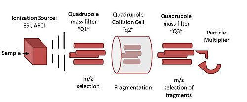

Instrument Specifications
What Safeplate Sciences can offer you!

Portable Liquid Chromatography/Mass Spectrometry (LC/MS)
Safeplace Science provides real-time analysis of food samples using liquid chromatography/mass spectrometry (LC/MS). We believe that LC/MS is the most viable option for portable, consumer-friendly food analysis due to its compatibility with most food samples. A notable competitor for LC/MS, gas chromatography/mass spectroscopy (GC/MS), is only compatible with volatile compounds, of which a significant amount of allergy proteins and toxic additives are not.
Our LC/MS utilizes the Top Market specifications for real-time, food mass-spectrometry analysis. Liquid chromatography is paired with an electrospray ionization (ESI) cation source to generate intact molecular parent ions. This ion source keeps any molecules arriving at the first quadrupole whole.. We do not use atmospheric pressure chemical ionization (APCI) ion sources. This type of ionization would open sparks in the instrument, which our HR team has deemed too risky, and APCI is not effective for analysis of compounds over 1.5 kDa. The recommended LC solvents for general buyers consist of nanopure water, methanol, or acetonitrile. Safeplate Sciences offers cheap household deliveries of supplemental solvent one gallon bottles after your initial offered solvents, per purchase, runs out.
Our analyzer and filtering system consists of a triple quadrupole. The three quadrupoles, designated in order as Q1, Q2, and Q3, function to filter out specific or a range of compound masses. Q1 is designed to allow a select mass or masses through, such as specific proteins or contaminants, especially while utilizing the SIM mode feature. Q2 is designed as a collision cell, running inert nitrogen through the cell to induce collision-induced dissociation. Q3 is designed as the final filtering cell. Once molecules have been filtered initially through Q1 and fragmented in Q2, the Q3 cell will allow a specific mass, or fragment, through to the detector.
Safeplate Lite
Click below to learn of Safeplate Science's up and coming Safeplate Lite feature, a smaller version Safeplate suitable for foodies on the go!
Also Something
Sed tristique purus vitae volutpat ultrices. Aliquam eu elit eget arcu commodo suscipit dolor nec nibh. Proin a ullamcorper elit, et sagittis turpis. Integer ut fermentum.
Probably Something
Sed tristique purus vitae volutpat ultrices. Aliquam eu elit eget arcu commodo suscipit dolor nec nibh. Proin a ullamcorper elit, et sagittis turpis. Integer ut fermentum.